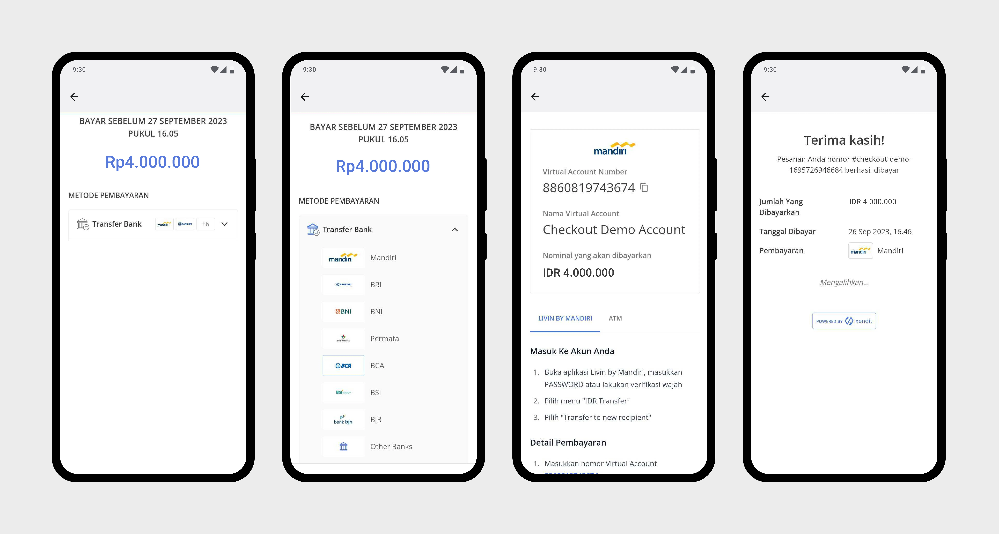
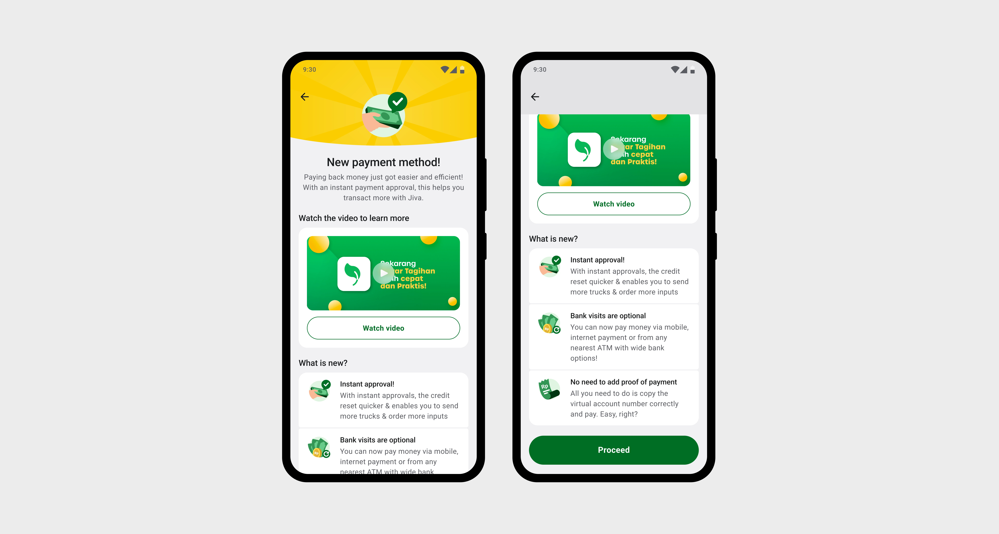

CDC w Xendit
2023.Jiva
Integrating a new payment system into Jiva’s repayment flow, without disrupting the journey users already knew.

Introduction
Jiva was a micro-financing company for smallholder farmers in Indonesia. Their core users called Field Agents used the app to buy agricultural inputs like seeds and pesticides, send crops for procurement, and give loans to farmers in their network.
When I joined, there was already a repayment flow in place. It had worked fine when the company was smaller. But Jiva was growing, and the cracks were starting to show.
Challenge
The task was to bring in a payment aggregator called Xendit without breaking the mental model Field Agents had already built around repayments. The company also wanted to cut the human errors that were generating support tickets and slowing down the finance team.
Why these changes?
Field Agents are a smallholder farmer’s primary link to credit. During peak harvest season, a 72-hour wait to confirm a loan repayment meant some farmers couldn’t access their next loan in time. That alone made this worth fixing.
I wanted to understand the full picture before touching anything, so I went around and asked the stakeholders and this is what I heard from them
- To reduce the support tickets which took 4 - 48 hours to be resolved.
- Making the system smart enough that the human errors reduce which the system should have caught in the first place.
- Field Agents are smallholder farmers’ primary link to credit. During peak harvest season, a 72-hour wait to confirm a loan repayment could mean a farmer can’t access the next loan in time.
Process
The Initial steps - Desk Research
To begin with I started what are the human errors that are being made, So I had to go through the support tickets and that helped me understand what the human errors were
- Wrong amount added in loan categories.
- Making sure that the total sum loan amount matched with the loan categories.
- wrong loan category being selected, like the ones without outstanding.
These seem like small mistakes. But each one meant someone from the accounting team had to call the Field Agent, re-verify the numbers, and manually fix it in the system. Multiply that across dozens of agents and it adds up fast.
Current user flow - Desk Research
At the time, the flow worked this way that a Field Agent transferred money to Jiva’s fixed bank account, then came into the app to manually allocate that payment across loan categories. The app had no way to verify the transfer had happened so Jiva’s finance team spent 48–72 hours checking every claim before updating any balance.

User flow before xendit
The problem with the current system
- The user had to do some mental math while mentioning the amount, this is one of important flows where the users always got tensed and then made the mistakes.
- No system-level checks existed to catch the input errors
- Longer process over all from the user and from Jiva’s end.
- During peak harvest season the wait time made it harder for farmers to get the next loan.
Fundamental changes with Xendit - Desk Research
Xendit is a payment aggregator that supports multiple payment methods ATM deposit, internet banking, bank transfer, supermarket counter payments. When a user pays, Xendit generates a virtual bank account number tied to them, confirms the transaction automatically, and updates the balance.
With Xendit in the flow, the order of steps had to flip. Instead of paying first and then coming into the app to allocate, the user would now select categories first, then pay.
Proposed user flow with Xendit
Hypothesis
My hypothesis was that even with a new payment backend, the steps inside the app should stay as close to the old flow as possible. Field Agents had built a routine around this. A completely different experience would create a learning curve we didn’t need. Let Xendit work underneath not instead of what users already knew.
Wire Frame and Initial Designs
I built a prototype around the new flow in which users no longer needed to enter an amount manually or upload a bank slip. The question was whether removing those two steps would feel like relief, or just create confusion.
Research Planning and User Testing(UT)
The goal was to find friction early, before anything went live. Testing surfaced two things we hadn’t fully anticipated
- We needed to explain the change upfront. Users didn’t understand why the flow felt different. Adding a screen at the start before they hit anything new gave them the context to move through it with confidence.
- Removing the bank slip caused confusion, not relief. That slip was something users had uploaded for over a year. When it was gone, people didn’t feel unburdened they felt uncertain. We had to explicitly call out the change at the start of the flow and explain why it was gone, not just quietly remove it.
Considering all the changes I started working on the screens and made these changes
Cash deposit history and outstanding
The old screens had separate entry points for checking the outstanding balance, registering a deposit, and viewing history. The new design puts all of it on one screen no navigating around to piece together the picture.

Cash deposit claim
Previously, users had to specify the transfer date, allocate amounts to loan categories, and upload a photo of the bank slip. In the new design, Xendit handles identification automatically when the user pays the slip is gone, and the credit updates on its own.


Error handling
The old design had no guard rails for input mistakes. The new one catches edge cases before they become support tickets wrong amounts, mismatched totals, categories with no outstanding balance.

Payment
When a user was ready to make a payment, the system was configured to open an in-app browser, allowing them to complete the transaction through Xendit (Payment Aggregator).

Payment confirmation
Once a user completes a payment in Xendit, the screen is redirected back to the app, displaying the exact payment status of the cash deposit.

First Time User Experience
Since this was a new method for users to make cash deposits, User Testing revealed that some users experienced difficulty navigating and required assistance to understand the flow. To address this, we introduced an interim screen the first time a user initiates a cash deposit. Additionally, a video explaining the new process was shared via WhatsApp broadcast, notifying users of the change in cash deposit procedure.

Metrics
With the changes made we reduced the customer support calls by 90% that were being done due to human errors.
What did I learn
- Payment flows make people anxious, and anxious people make mistakes. That’s not a design failure, it’s just how people are. But it changed how I thought about error prevention. It’s not enough to remove friction. You also have to reassure people that the new thing is safe.
- There’s a real difference between telling someone “here’s how the new process works” and telling them “here’s why this is better for you.” The first explains. The second earns trust.
- when the system gets smarter, the heavy lifting moves to the team building it not to the user filling in the form. That’s where the effort should go.